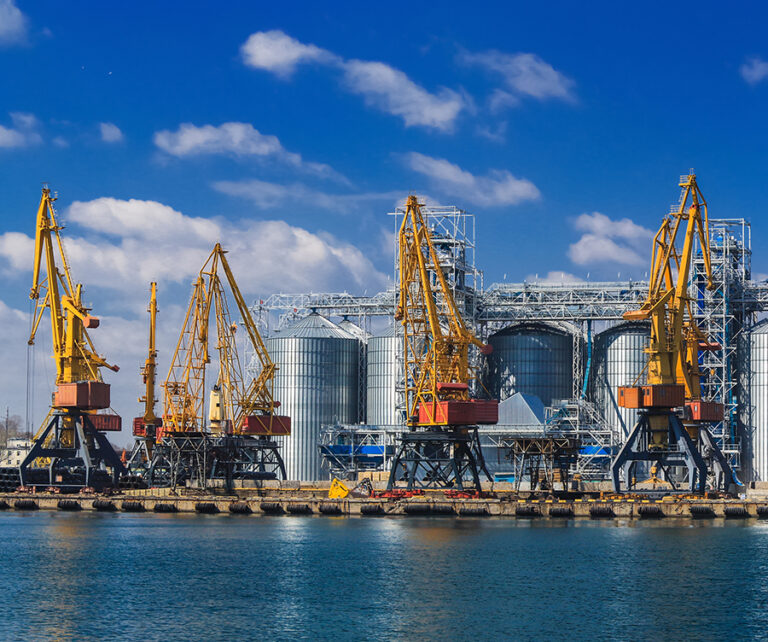
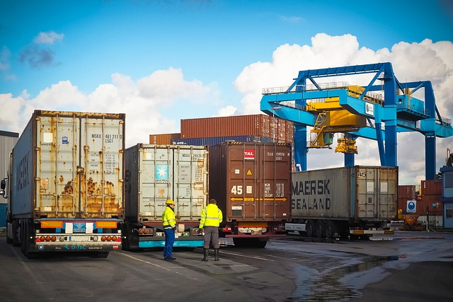

Інфраструктурний Розвиток та Стале Управління
Наша команда експертів пропонує комплексні та інноваційні підходи у сфері логістики, зокрема:

Оптимізація витрат та сталість постачання: Наші експерти допомагають знижувати витрати, враховуючи екологічні та соціальні аспекти. Наприклад, впровадження програми перевірки та аналізу витрат допомагає зменшити надмірні витрати на етапах поставок.
Інноваційні рішення для ефективного використання ресурсів: Ми розробляємо та впроваджуємо інноваційні підходи, спрямовані на оптимізацію використання ресурсів та зменшення впливу на навколишнє середовище. Наприклад, використання енергоефективного обладнання та матеріалів допомагає зменшити споживання енергії під час виробництва.


Ефективне управління ресурсами: Наші рекомендації стосуються оптимізації використання ресурсів з урахуванням соціальних та екологічних показників. Наприклад, впровадження системи моніторингу витрат допомагає підприємствам ефективно використовувати матеріали та енергію, забезпечуючи економічну вигоду та зниження впливу на довкілля.
Спрощення управління запасами: Наші рішення спрямовані на оптимізацію процесу управління запасами та забезпечення ефективного використання ресурсів. Наприклад, використання системи автоматизованого контролю запасів допомагає уникнути перевитрат та зменшити надлишковість у запасах.

Оптимізація логістики та транспортування: Ми допомагаємо оптимізувати управління логістикою та транспортуванням, забезпечуючи ефективну та екологічно відповідальну доставку продукції. Наприклад, використання екологічно чистих транспортних засобів допомагає знизити викиди CO2 під час транспортування.